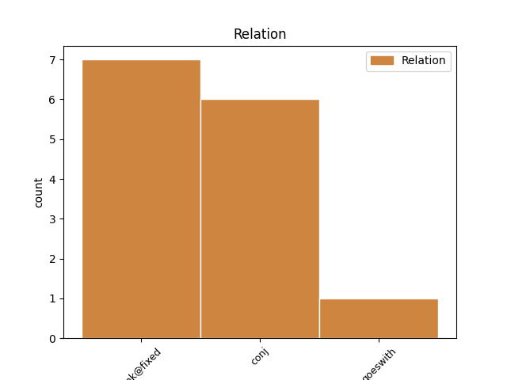
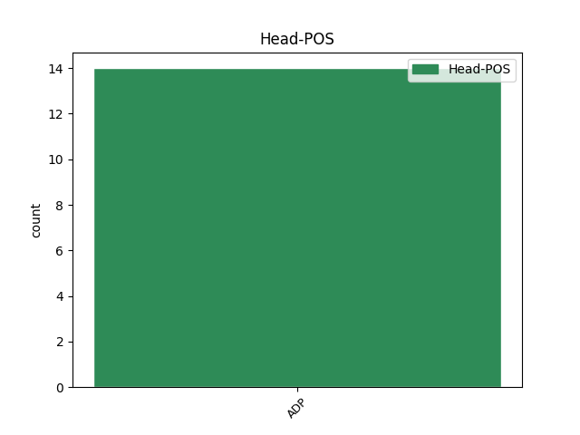
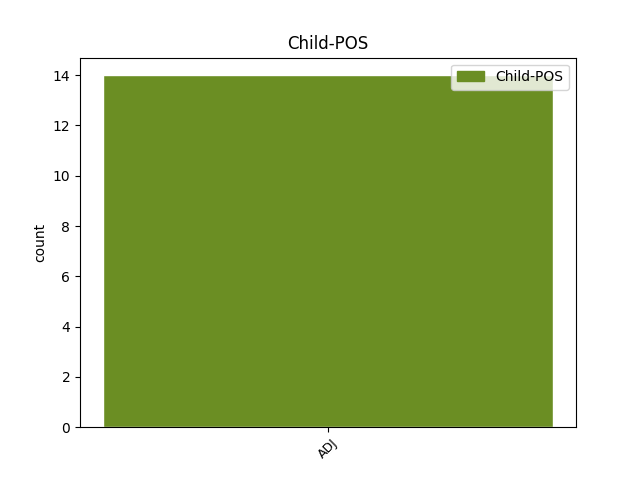

Distribution of features within this leaf



No agree examples found.
Disagree Examples:
1 Avea _ _ _ _ 0 _ _ _
2 o _ _ _ _ 0 _ _ _
3 hârtie _ _ _ _ 0 _ _ _
4 netedă _ _ _ _ 0 _ _ _
5 , _ _ _ _ 0 _ _ _
6 de de ADP Spsa AdpType=Prep|Case=Acc 0 _ _ _
7 cea _ _ _ _ 0 _ _ _
8 mai _ _ _ _ 0 _ _ _
9 bună _ _ _ _ 0 _ _ _
10 calitate _ _ _ _ 0 _ _ _
11 , _ _ _ _ 0 _ _ _
12 îngălbenită îngălbenit ADJ Afpfsrn Case=Acc,Nom|Definite=Ind|Degree=Pos|Gender=Fem|Number=Sing 6 conj _ _
13 puțin _ _ _ _ 0 _ _ _
14 de _ _ _ _ 0 _ _ _
15 vreme _ _ _ _ 0 _ _ _
16 , _ _ _ _ 0 _ _ _
17 din _ _ _ _ 0 _ _ _
18 felul _ _ _ _ 0 _ _ _
19 acela _ _ _ _ 0 _ _ _
20 care _ _ _ _ 0 _ _ _
21 nu _ _ _ _ 0 _ _ _
22 se _ _ _ _ 0 _ _ _
23 mai _ _ _ _ 0 _ _ _
24 fabrica _ _ _ _ 0 _ _ _
25 de _ _ _ _ 0 _ _ _
26 cel _ _ _ _ 0 _ _ _
27 puțin _ _ _ _ 0 _ _ _
28 patruzeci _ _ _ _ 0 _ _ _
29 de _ _ _ _ 0 _ _ _
30 ani _ _ _ _ 0 _ _ _
31 . _ _ _ _ 0 _ _ _
1 Așa _ _ _ _ 0 _ _ _
2 ceva _ _ _ _ 0 _ _ _
3 nu _ _ _ _ 0 _ _ _
4 era _ _ _ _ 0 _ _ _
5 ilegal _ _ _ _ 0 _ _ _
6 - _ _ _ _ 0 _ _ _
7 nimic _ _ _ _ 0 _ _ _
8 nu _ _ _ _ 0 _ _ _
9 era _ _ _ _ 0 _ _ _
10 ilegal _ _ _ _ 0 _ _ _
11 , _ _ _ _ 0 _ _ _
12 din _ _ _ _ 0 _ _ _
13 moment _ _ _ _ 0 _ _ _
14 ce _ _ _ _ 0 _ _ _
15 nu _ _ _ _ 0 _ _ _
16 mai _ _ _ _ 0 _ _ _
17 existau _ _ _ _ 0 _ _ _
18 legi _ _ _ _ 0 _ _ _
19 - _ _ _ _ 0 _ _ _
20 dar _ _ _ _ 0 _ _ _
21 , _ _ _ _ 0 _ _ _
22 dacă _ _ _ _ 0 _ _ _
23 se _ _ _ _ 0 _ _ _
24 descoperea _ _ _ _ 0 _ _ _
25 , _ _ _ _ 0 _ _ _
26 se _ _ _ _ 0 _ _ _
27 putea _ _ _ _ 0 _ _ _
28 aștepta _ _ _ _ 0 _ _ _
29 , _ _ _ _ 0 _ _ _
30 pe pe ADP Spsa AdpType=Prep|Case=Acc 0 _ _ _
31 bună bun ADJ Afpfsrn Case=Acc,Nom|Definite=Ind|Degree=Pos|Gender=Fem|Number=Sing 30 unk@fixed _ _
32 dreptate _ _ _ _ 0 _ _ _
33 , _ _ _ _ 0 _ _ _
34 să _ _ _ _ 0 _ _ _
35 fie _ _ _ _ 0 _ _ _
36 pedepsit _ _ _ _ 0 _ _ _
37 cu _ _ _ _ 0 _ _ _
38 moartea _ _ _ _ 0 _ _ _
39 sau _ _ _ _ 0 _ _ _
40 cel _ _ _ _ 0 _ _ _
41 puțin _ _ _ _ 0 _ _ _
42 douăzeci _ _ _ _ 0 _ _ _
43 și _ _ _ _ 0 _ _ _
44 cinci _ _ _ _ 0 _ _ _
45 de _ _ _ _ 0 _ _ _
46 ani _ _ _ _ 0 _ _ _
47 într- _ _ _ _ 0 _ _ _
48 un _ _ _ _ 0 _ _ _
49 lagăr _ _ _ _ 0 _ _ _
50 de _ _ _ _ 0 _ _ _
51 muncă _ _ _ _ 0 _ _ _
52 silnică _ _ _ _ 0 _ _ _
53 . _ _ _ _ 0 _ _ _
1 Și _ _ _ _ 0 _ _ _
2 iată _ _ _ _ 0 _ _ _
3 că _ _ _ _ 0 _ _ _
4 ea _ _ _ _ 0 _ _ _
5 stătea _ _ _ _ 0 _ _ _
6 la _ _ _ _ 0 _ _ _
7 o _ _ _ _ 0 _ _ _
8 masă _ _ _ _ 0 _ _ _
9 cam _ _ _ _ 0 _ _ _
10 în în ADP Spsa AdpType=Prep|Case=Acc 0 _ _ _
11 același _ _ _ _ 0 _ _ _
12 loc _ _ _ _ 0 _ _ _
13 și _ _ _ _ 0 _ _ _
14 tot _ _ _ _ 0 _ _ _
15 singură singur ADJ Afpfsrn Case=Acc,Nom|Definite=Ind|Degree=Pos|Gender=Fem|Number=Sing 10 conj _ SpaceAfter=No
16 . _ _ _ _ 0 _ _ _
1 Cine _ _ _ _ 0 _ _ _
2 are _ _ _ _ 0 _ _ _
3 puterea _ _ _ _ 0 _ _ _
4 să _ _ _ _ 0 _ _ _
5 creadă _ _ _ _ 0 _ _ _
6 cu _ _ _ _ 0 _ _ _
7 adevărat _ _ _ _ 0 _ _ _
8 în _ _ _ _ 0 _ _ _
9 această _ _ _ _ 0 _ _ _
10 tehnică _ _ _ _ 0 _ _ _
11 , _ _ _ _ 0 _ _ _
12 va _ _ _ _ 0 _ _ _
13 simți _ _ _ _ 0 _ _ _
14 pe pe ADP Spsa AdpType=Prep|Case=Acc 0 _ _ _
15 propria propriu ADJ Afpfsry Case=Acc,Nom|Definite=Def|Degree=Pos|Gender=Fem|Number=Sing 14 unk@fixed _ SpaceAfter=No
16 -i _ _ _ _ 0 _ _ _
17 piele _ _ _ _ 0 _ _ _
18 că _ _ _ _ 0 _ _ _
19 TAIJIQUAN _ _ _ _ 0 _ _ _
20 nu _ _ _ _ 0 _ _ _
21 e _ _ _ _ 0 _ _ _
22 vorbărie _ _ _ _ 0 _ _ _
23 goală _ _ _ _ 0 _ _ _
24 , _ _ _ _ 0 _ _ _
25 ne _ _ _ _ 0 _ _ _
26 asigură _ _ _ _ 0 _ _ _
27 Cristian _ _ _ _ 0 _ _ _
28 Ristache _ _ _ _ 0 _ _ _
29 , _ _ _ _ 0 _ _ _
30 președintele _ _ _ _ 0 _ _ _
31 clubului _ _ _ _ 0 _ _ _
32 . _ _ _ _ 0 _ _ _
1 Tot _ _ _ _ 0 _ _ _
2 în _ _ _ _ 0 _ _ _
3 1895 _ _ _ _ 0 _ _ _
4 , _ _ _ _ 0 _ _ _
5 prim- _ _ _ _ 0 _ _ _
6 redactor _ _ _ _ 0 _ _ _
7 este _ _ _ _ 0 _ _ _
8 numit _ _ _ _ 0 _ _ _
9 C. _ _ _ _ 0 _ _ _
10 Bacalbașa _ _ _ _ 0 _ _ _
11 care _ _ _ _ 0 _ _ _
12 , _ _ _ _ 0 _ _ _
13 cu cu ADP Spsa AdpType=Prep|Case=Acc 0 _ _ _
14 încetul încet ADJ Afpmsry Case=Acc,Nom|Definite=Def|Degree=Pos|Gender=Masc|Number=Sing 13 unk@fixed _ SpaceAfter=No
15 , _ _ _ _ 0 _ _ _
16 modifică _ _ _ _ 0 _ _ _
17 și _ _ _ _ 0 _ _ _
18 componența _ _ _ _ 0 _ _ _
19 redacției _ _ _ _ 0 _ _ _
20 . _ _ _ _ 0 _ _ _